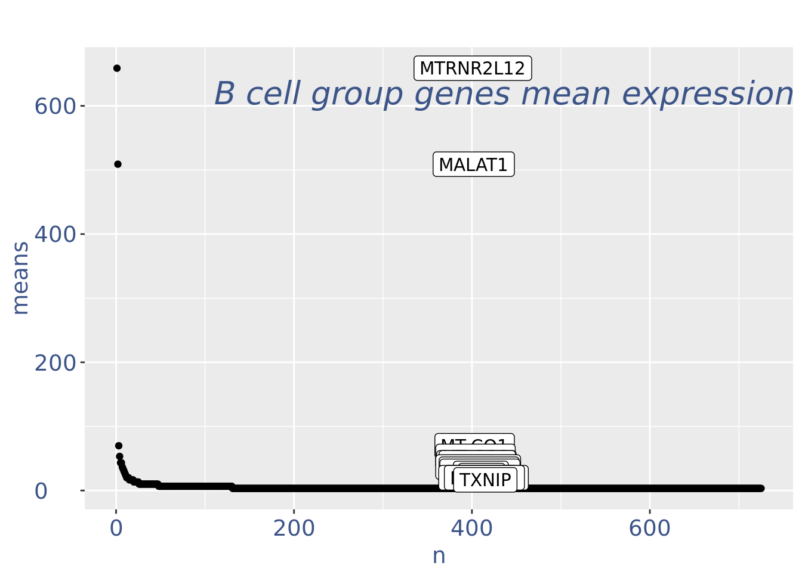

library(dplyr)
library(COTAN)
library(Seurat)
library(tibble)
library(ggplot2)
library(zeallot)
library(DropletUtils)Filtering of PBMC3 using COTAN
Library import
Settings
datasetName = 'PBMC3'
datasetFolder = './Data/'
inDir = paste(datasetFolder, datasetName, '/raw/10X/', sep='')
outDir = paste(datasetFolder, datasetName, '/filtered/', sep='')
dir10X = paste(outDir, '10X/', sep='')
if (!dir.exists(outDir)) {
dir.create(outDir, recursive = TRUE, showWarnings = FALSE)
}
setLoggingLevel(2)
setLoggingFile(paste(outDir, "logfile.log", sep=""))
options(parallelly.fork.enable = TRUE)Data loading
dataset = Read10X(data.dir = inDir, strip.suffix = TRUE)
dataset = dataset[[1]]
sampleCond <- datasetName
PBMC3 <- COTAN(raw = dataset)
PBMC3 <- initializeMetaDataset(
PBMC3,
GEO = paste("10X ", datasetName, sep=""),
sequencingMethod = "10X",
sampleCond = sampleCond
)Inspect cells’ sizes
cellSizePlot(PBMC3)Drop cells with too many reads as they are probably doublets
cellsSizeThr <- 20000
PBMC3 <- addElementToMetaDataset(PBMC3, "Cells size threshold", cellsSizeThr)
cellsToRem <- getCells(PBMC3)[getCellsSize(PBMC3) > cellsSizeThr]
PBMC3 <- dropGenesCells(PBMC3, cells = cellsToRem)
cellSizePlot(PBMC3, splitPattern = "-", numCol = 2)Inspect the number of expressed genes per cell
genesSizePlot(PBMC3, splitPattern = "-", numCol = 2)Drop cells with too high genes expression as they are probably doublets
geneSizeThr <- 3500
PBMC3 <- addElementToMetaDataset(PBMC3, "Num genes threshold", geneSizeThr)
numExprGenes <- getNumExpressedGenes(PBMC3)
cellsToRem <- names(numExprGenes)[numExprGenes > geneSizeThr]
PBMC3 <- dropGenesCells(PBMC3, cells = cellsToRem)
genesSizePlot(PBMC3, splitPattern = "-", numCol = 2)Check number of mithocondrial genes expressed in each cell
mitGenesPattern <- "^[Mm][Tt]-"
getGenes(PBMC3)[grep(mitGenesPattern, getGenes(PBMC3))] [1] "MT-ND1" "MT-ND2" "MT-CO1" "MT-CO2" "MT-ATP8" "MT-ATP6" "MT-CO3"
[8] "MT-ND3" "MT-ND4L" "MT-ND4" "MT-ND5" "MT-ND6" "MT-CYB" c(mitPlot, mitSizes) %<-%
mitochondrialPercentagePlot(PBMC3, genePrefix = mitGenesPattern,
splitPattern = "-", numCol = 2)
plot(mitPlot)We drop cells with a too high percentage of mitocondrial genes (are likely dead)
mitPercThr <- 10
PBMC3 <- addElementToMetaDataset(PBMC3, "Mitoc. perc. threshold", mitPercThr)
cellsToRem <- rownames(mitSizes)[mitSizes[["mit.percentage"]] > mitPercThr]
PBMC3 <- dropGenesCells(PBMC3, cells = cellsToRem)
c(mitPlot, mitSizes) %<-%
mitochondrialPercentagePlot(PBMC3, genePrefix = mitGenesPattern,
splitPattern = "-", numCol = 2)
plot(mitPlot)Check number of ribosomial genes expressed in each cell
ribGenesPattern <- "^RP[SL]\\d+"
getGenes(PBMC3)[grep(ribGenesPattern, getGenes(PBMC3))] [1] "RPL22" "RPL11" "RPS6KA1" "RPS8"
[5] "RPL5" "RPS27" "RPS6KC1" "RPS7"
[9] "RPS27A" "RPL31" "RPL37A" "RPL32"
[13] "RPL15" "RPL14" "RPL29" "RPL24"
[17] "RPL22L1" "RPL39L" "RPL35A" "RPL9"
[21] "RPL34-AS1" "RPL34" "RPS3A" "RPL37"
[25] "RPS23" "RPS14" "RPL26L1" "RPS18"
[29] "RPS10-NUDT3" "RPS10" "RPL10A" "RPL7L1"
[33] "RPS12" "RPS6KA2" "RPS6KA2-AS1" "RPS6KA3"
[37] "RPS4X" "RPS6KA6" "RPL36A" "RPL36A-HNRNPH2"
[41] "RPL39" "RPL10" "RPS20" "RPL7"
[45] "RPL30" "RPL8" "RPS6" "RPL35"
[49] "RPL12" "RPL7A" "RPL27A" "RPS13"
[53] "RPS6KA4" "RPS6KB2" "RPS6KB2-AS1" "RPS3"
[57] "RPS25" "RPS24" "RPS26" "RPL41"
[61] "RPL6" "RPL21" "RPL10L" "RPS29"
[65] "RPL36AL" "RPS6KL1" "RPS6KA5" "RPS27L"
[69] "RPL4" "RPS17" "RPL3L" "RPS2"
[73] "RPS15A" "RPL13" "RPL26" "RPL23A"
[77] "RPL23" "RPL19" "RPL27" "RPS6KB1"
[81] "RPL38" "RPL17-C18orf32" "RPL17" "RPS21"
[85] "RPS15" "RPL36" "RPS28" "RPL18A"
[89] "RPS16" "RPS19" "RPL18" "RPL13A"
[93] "RPS11" "RPS9" "RPL28" "RPS5"
[97] "RPS4Y1" "RPS4Y2" "RPL3" "RPS19BP1" c(ribPlot, ribSizes) %<-%
mitochondrialPercentagePlot(PBMC3, genePrefix = ribGenesPattern,
splitPattern = "-", numCol = 2)
plot(ribPlot)Check no further outliers after all the culling
cellSizePlot(PBMC3, splitPattern = "-", numCol = 2)genesSizePlot(PBMC3, splitPattern = "-", numCol = 2)Cleaning, round 1
PBMC3 <- clean(PBMC3)
c(pcaCellsPlot, pcaCellsData, genesPlot, UDEPlot, nuPlot, zoomedNuPlot) %<-% cleanPlots(PBMC3)
plot(pcaCellsPlot)plot(genesPlot)PBMC3 <- addElementToMetaDataset(PBMC3, "Num drop B group", 0)plot(UDEPlot)plot(nuPlot)plot(zoomedNuPlot) yset=0.16
nuDf <- data.frame("nu" = sort(getNu(PBMC3)), "n" = seq_along(getNu(PBMC3)))
PBMC3 <- addElementToMetaDataset(PBMC3, "Threshold low UDE cells:", yset)
cellsToRem <-rownames(nuDf)[nuDf[["nu"]] < yset]
PBMC3 <- dropGenesCells(PBMC3, cells = cellsToRem)Cleaning, round 2
PBMC3 <- clean(PBMC3)
c(pcaCellsPlot, pcaCellsData, genesPlot, UDEPlot, nuPlot, zoomedNuPlot) %<-% cleanPlots(PBMC3)
plot(pcaCellsPlot)plot(pcaCellsData)
plot(genesPlot)
plot(UDEPlot)plot(nuPlot)plot(zoomedNuPlot)plot(cellSizePlot(PBMC3, splitPattern = "-", numCol = 2))plot(genesSizePlot(PBMC3, splitPattern = "-", numCol = 2))Save the filtered dataset
if (!dir.exists(dir10X)) {
write10xCounts(dir10X, getRawData(PBMC3))
}saveRDS(PBMC3, file = paste0(outDir, sampleCond, ".cotan.RDS"))sessionInfo()R version 4.3.2 (2023-10-31)
Platform: x86_64-pc-linux-gnu (64-bit)
Running under: Ubuntu 20.04.6 LTS
Matrix products: default
BLAS: /usr/lib/x86_64-linux-gnu/blas/libblas.so.3.9.0
LAPACK: /usr/lib/x86_64-linux-gnu/lapack/liblapack.so.3.9.0
locale:
[1] LC_CTYPE=C.UTF-8 LC_NUMERIC=C LC_TIME=C.UTF-8
[4] LC_COLLATE=C.UTF-8 LC_MONETARY=C.UTF-8 LC_MESSAGES=C.UTF-8
[7] LC_PAPER=C.UTF-8 LC_NAME=C LC_ADDRESS=C
[10] LC_TELEPHONE=C LC_MEASUREMENT=C.UTF-8 LC_IDENTIFICATION=C
time zone: Europe/Rome
tzcode source: system (glibc)
attached base packages:
[1] stats4 stats graphics grDevices utils datasets methods
[8] base
other attached packages:
[1] DropletUtils_1.20.0 SingleCellExperiment_1.22.0
[3] SummarizedExperiment_1.30.2 Biobase_2.60.0
[5] GenomicRanges_1.52.0 GenomeInfoDb_1.36.1
[7] IRanges_2.34.1 S4Vectors_0.38.1
[9] BiocGenerics_0.46.0 MatrixGenerics_1.12.3
[11] matrixStats_1.2.0 zeallot_0.1.0
[13] ggplot2_3.4.2 tibble_3.2.1
[15] Seurat_5.0.0 SeuratObject_5.0.0
[17] sp_2.1-1 COTAN_2.3.0
[19] dplyr_1.1.2
loaded via a namespace (and not attached):
[1] RcppAnnoy_0.0.21 splines_4.3.2
[3] later_1.3.1 bitops_1.0-7
[5] R.oo_1.25.0 polyclip_1.10-4
[7] fastDummies_1.7.3 lifecycle_1.0.3
[9] edgeR_3.42.4 doParallel_1.0.17
[11] globals_0.16.2 lattice_0.22-5
[13] MASS_7.3-60 dendextend_1.17.1
[15] magrittr_2.0.3 limma_3.56.2
[17] plotly_4.10.2 rmarkdown_2.24
[19] yaml_2.3.7 httpuv_1.6.11
[21] sctransform_0.4.1 spam_2.10-0
[23] askpass_1.2.0 spatstat.sparse_3.0-2
[25] reticulate_1.34.0 cowplot_1.1.1
[27] pbapply_1.7-2 RColorBrewer_1.1-3
[29] zlibbioc_1.46.0 abind_1.4-5
[31] Rtsne_0.16 R.utils_2.12.2
[33] purrr_1.0.1 RCurl_1.98-1.12
[35] circlize_0.4.15 GenomeInfoDbData_1.2.10
[37] ggrepel_0.9.3 irlba_2.3.5.1
[39] listenv_0.9.0 spatstat.utils_3.0-3
[41] umap_0.2.10.0 goftest_1.2-3
[43] RSpectra_0.16-1 spatstat.random_3.2-1
[45] dqrng_0.3.0 fitdistrplus_1.1-11
[47] parallelly_1.36.0 DelayedMatrixStats_1.22.5
[49] leiden_0.4.3 codetools_0.2-19
[51] DelayedArray_0.26.7 scuttle_1.10.2
[53] tidyselect_1.2.0 shape_1.4.6
[55] farver_2.1.1 ScaledMatrix_1.8.1
[57] viridis_0.6.4 spatstat.explore_3.2-1
[59] jsonlite_1.8.7 GetoptLong_1.0.5
[61] ellipsis_0.3.2 progressr_0.14.0
[63] ggridges_0.5.4 survival_3.5-7
[65] iterators_1.0.14 foreach_1.5.2
[67] tools_4.3.2 ica_1.0-3
[69] Rcpp_1.0.11 glue_1.6.2
[71] gridExtra_2.3 xfun_0.39
[73] ggthemes_5.0.0 HDF5Array_1.28.1
[75] withr_2.5.0 fastmap_1.1.1
[77] rhdf5filters_1.12.1 fansi_1.0.4
[79] openssl_2.1.0 digest_0.6.33
[81] rsvd_1.0.5 parallelDist_0.2.6
[83] R6_2.5.1 mime_0.12
[85] colorspace_2.1-0 scattermore_1.2
[87] tensor_1.5 spatstat.data_3.0-1
[89] R.methodsS3_1.8.2 utf8_1.2.3
[91] tidyr_1.3.0 generics_0.1.3
[93] data.table_1.14.8 httr_1.4.6
[95] htmlwidgets_1.6.2 S4Arrays_1.2.0
[97] uwot_0.1.16 pkgconfig_2.0.3
[99] gtable_0.3.3 ComplexHeatmap_2.16.0
[101] lmtest_0.9-40 XVector_0.40.0
[103] htmltools_0.5.7 dotCall64_1.1-0
[105] clue_0.3-64 scales_1.3.0
[107] png_0.1-8 knitr_1.43
[109] rstudioapi_0.15.0 reshape2_1.4.4
[111] rjson_0.2.21 nlme_3.1-163
[113] rhdf5_2.44.0 zoo_1.8-12
[115] GlobalOptions_0.1.2 stringr_1.5.0
[117] KernSmooth_2.23-22 parallel_4.3.2
[119] miniUI_0.1.1.1 RcppZiggurat_0.1.6
[121] pillar_1.9.0 grid_4.3.2
[123] vctrs_0.6.3 RANN_2.6.1
[125] promises_1.2.0.1 BiocSingular_1.16.0
[127] beachmat_2.16.0 xtable_1.8-4
[129] cluster_2.1.6 evaluate_0.21
[131] locfit_1.5-9.8 cli_3.6.1
[133] compiler_4.3.2 rlang_1.1.1
[135] crayon_1.5.2 future.apply_1.11.0
[137] labeling_0.4.2 plyr_1.8.8
[139] stringi_1.8.1 viridisLite_0.4.2
[141] deldir_2.0-2 BiocParallel_1.34.2
[143] assertthat_0.2.1 munsell_0.5.0
[145] lazyeval_0.2.2 spatstat.geom_3.2-4
[147] PCAtools_2.14.0 Matrix_1.6-3
[149] RcppHNSW_0.5.0 patchwork_1.1.2
[151] sparseMatrixStats_1.12.2 future_1.33.0
[153] Rhdf5lib_1.22.0 shiny_1.8.0
[155] ROCR_1.0-11 Rfast_2.1.0
[157] igraph_1.6.0 RcppParallel_5.1.7